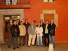
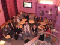
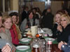
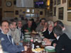

ENCUENTRO EN SANTOÑA |
Día 4 por la noche |
Semana Santa 2007 |
RESUMEN: Por la tarde-noche nos reunimos en el Bar de Berto (Al), para tomarnos los correspondientes vinos con anchoa y Cabrales: E-X-Q-U-I-S-I-T-O. Hay que decir que no es que nuestros pasos nos dirijieran hacia allí de manera inesperada, sino que previamente, por la mañana, se había quedado con Labrador en ese sitiio y que avisara al resto de santoñeses. Así pues, después de degustar lo degustable, nos llevaros los de la tierra a un pub-cafetería cercano (hay que decir que en Santoña, exceptuando el Buciero y el Dueso, no hay nada lejano) donde degustamos unas copas, cafés, en fin, un rato muy agradable que echamos para, posteriormente dirigirnos a cenar a la famosa "TASCA", sitio que volvemos a recomendar, donde nos pusieron como a Felipe II. |
 |
||||
 |
 |
 |